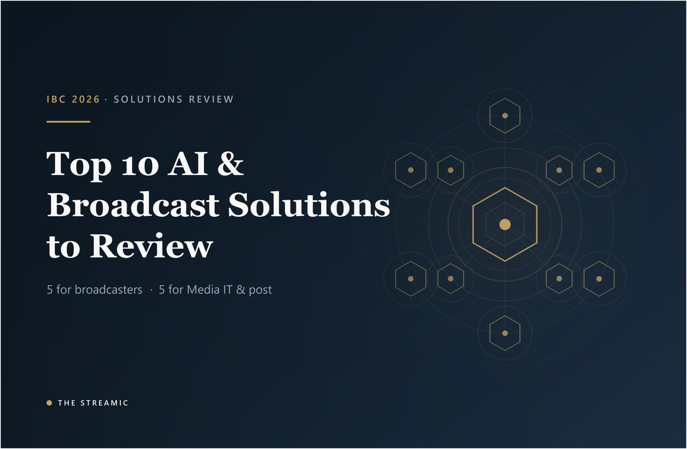

IBC Amsterdam 2026 Preview
IBC 2026: Top 10 AI and Broadcast Solutions to Review
Five standout solutions for broadcasters and digital channels, plus five for Media IT and post-production.

Editorial status: Pre-show analysis based on official IBC information available on 22 August 2026. IBC2026 runs from 11 to 14 September 2026. Announced demonstrations and claims still require validation at the show.
This ranked shortlist focuses on solutions with a clear operational problem, an identifiable user and a practical test broadcasters can run at IBC2026. The first five serve broadcasters and digital channels; the remaining five focus on Media IT and post-production.
Ten IBC 2026 AI and broadcast solutions
- Platform-Native News in the Agentic AI Era
- Magycal near-live AI content generation
- KAON real-time vertical conversion
- Premier League Companion powered by Copilot
- AudioShake Dialogue RT and audio control
- Smart Stories and the Story Object Model
- FRAMES federated agentic media environment
- Eddie AI assistant editor
- Projective Strawberry AI media intelligence
- Sovereign cloud media supply chain
Broadcasters and digital channels
Solutions 1–5 — live news, sports and mobile-first distribution.
1. Platform-Native News in the Agentic AI Era
Reuters, VESET and Amagi will discuss turning live and VOD news into platform-ready outputs using story segmentation, reframing, captions, metadata, summaries and direct publishing. Governance is central: newsroom rules and human approval should control what agents can release.
Best fit: News organisations scaling web, OTT, FAST and social output without creating a separate manual production chain.
What to verify at IBC: Ask for a breaking-news demonstration covering corrections, embargoes, approval, failed publishing and audit history.
2. Magycal near-live AI content generation
Magycal’s Future Tech session describes AI monitoring live events, detecting moments, transcribing audio, generating metadata and assembling digital assets within seconds. The stated architecture is “AI assists, Human decides”, with claimed efficiency gains above 90 per cent.
Best fit: Sports and event teams handling many simultaneous feeds with limited editors.
What to verify at IBC: Measure false positives, missed moments, correction time, output consistency and the true operator time saved.
Sources: Near-Live Content Generation with AI
3. KAON real-time horizontal-to-vertical conversion
KAON Group’s Innovation Awards-nominated solution transforms horizontal live broadcasts into real-time vertical feeds. It targets the expensive and time-sensitive gap between television production and full-screen mobile viewing.
Best fit: Broadcasters and rights holders building mobile-first sports, news and entertainment services.
What to verify at IBC: Test subject tracking, split-screen scenes, captions, graphics, scoreboards, latency and instant manual override.
Sources: IBC2026 Innovation Awards nominees
4. Premier League Companion powered by Copilot
The nominated Premier League Companion signals a move toward conversational fan products that combine live context, competition data and personalised discovery. Its value depends on dependable source data and a clearly designed viewer journey, not the novelty of a chat interface.
Best fit: Sports properties seeking deeper engagement inside owned apps and streaming experiences.
What to verify at IBC: Verify data attribution, response latency, accessibility, moderation, regional rights and protection against fabricated statistics.
Sources: IBC2026 Innovation Awards nominees
5. AudioShake Dialogue RT and audio control
Dialogue RT separates clean dialogue and background audio with a vendor-stated 11 ms end-to-end latency. AudioShake is also demonstrating music identification, copyright control and tools for dubbing and archive reuse.
Best fit: Noisy sports feeds, international versions, accessibility, compliance and catalogue monetisation.
What to verify at IBC: Listen for separation artefacts, phase changes and lip-sync issues, then validate copyright reports against known cue sheets.
Sources: AudioShake Dialogue RT
Media IT and post-production
Solutions 6–10 — asset management, archives, editing and cloud infrastructure.
6. Smart Stories and the Story Object Model
The IBC Incubator will present a Story Object Model that makes a story, its sources, assets and state available across multi-vendor and multi-cloud systems. The aim is to stop editorial context being lost at every systems hand-off.
Best fit: Media IT teams connecting NRCS, MAM, editing, graphics, archive and digital publishing.
What to verify at IBC: Ask which vendors support the model, how conflicting updates are resolved and how state recovers after an outage.
7. FRAMES federated agentic media environment
FRAMES combines federated retrieval, automated tagging, enhancement, semantic search and a knowledge graph in a hybrid end-to-end proof of concept. It uses MovieLabs ontology and keeps creators in the loop for transparent content remixing.
Best fit: Studios and broadcasters with fragmented archives, inconsistent metadata and production silos.
What to verify at IBC: Test rights-aware search, identity mapping, legacy metadata, provenance and performance across differently secured repositories.
Sources: FRAMES Accelerator
8. Eddie AI assistant editor
Eddie AI creates a prompt-guided rough cut from imported footage and exports to Premiere Pro, Final Cut Pro or DaVinci Resolve. Its IBC directory entry states that over 50,000 editors and post teams use the service and that it is SOC 2 Type I audited.
Best fit: Interview-led, factual, documentary and corporate teams that spend heavily on first assemblies.
What to verify at IBC: Compare source security, transcript accuracy, edit quality, timeline integrity, relinking and repair time against a human assembly.
Sources: Eddie AI exhibitor listing
9. Projective Strawberry AI media intelligence
Projective lists AI visual search, automated transcription and translation in more than 99 languages. Its production asset management approach combines search with multisite workflow management, giving distributed teams a potentially useful operational layer around creative applications.
Best fit: Post facilities, broadcasters and production groups sharing projects across locations.
What to verify at IBC: Benchmark visual-search relevance, language accuracy, permissions, proxy relinking, peak performance and cloud costs.
Sources: Projective exhibitor listing
10. Sovereign cloud media supply chain from BCE, Ateme and Scaleway
IBC’s agenda highlights an end-to-end European sovereign-cloud chain covering ingest, transcoding, packaging and server-side ad insertion. It stands out as organisations assess data jurisdiction and concentration risk alongside performance and cost.
Best fit: European broadcasters with sovereignty, compliance, resilience or supplier-risk requirements.
What to verify at IBC: Request evidence for data location, identity controls, monitoring, recovery objectives, interoperability, cost and workload exit.
Sources: IBC2026 showfloor agenda
Frequently asked questions
Which IBC 2026 solutions are most relevant to digital channels?
Platform-native news, near-live clipping, vertical video conversion, AI sports companions and real-time dialogue separation provide the clearest digital-channel use cases.
Which IBC 2026 tools matter to Media IT and post-production?
Smart Stories, FRAMES, Eddie AI, Projective Strawberry and sovereign-cloud media supply chains deserve focused technical evaluation.
When and where is IBC 2026?
IBC2026 runs from 11 to 14 September 2026 at RAI Amsterdam in the Netherlands.
Independent pre-show editorial guide. Vendor and project claims should be tested against real workflows before procurement.